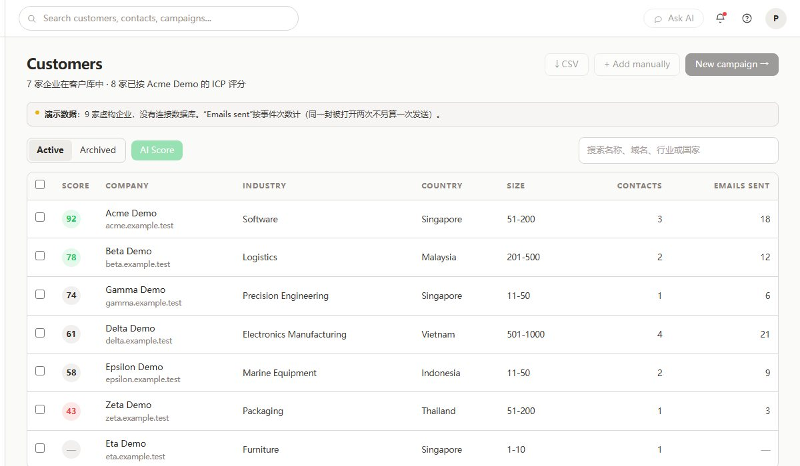
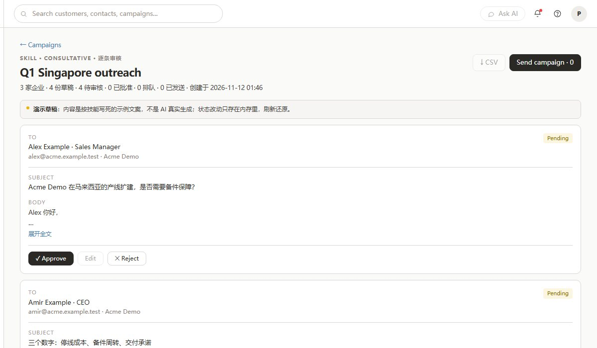

01
AI 海外拓客客户管理系统
产品负责人 · 独立完成设计面向工业品出口的 B2B 智能获客系统。市面上的工具大多只给一张提单清单， 这套系统先按需求匹配度筛一遍，再决定对谁开口。
- 独立完成产品需求文档从 v0.1 迭代到 v0.5：14 个页面、24 条业务规则、9 类异常处理、50 条可执行验收标准、老板 / 主管 / 销售三级权限。
- 设计「AI 评分 + 人工复核」机制：输出 0–100 分匹配度并附评分理由，AI 判定约九成，不确定的少量样本转人工队列。
- 与 AI 协作完成 Next.js + Supabase 全栈原型，在 320 / 375 / 768 / 1024 / 1440 五档断点逐页验收，留下 30 余张界面截图与数据库连通验证。
- 另写 634 行技术设计文档（24 张表、三层鉴权、19 条链路规则）；走读时自查出 3 处表结构缺口并回填。

① 匹配度 92 → 43
② 逐封审核